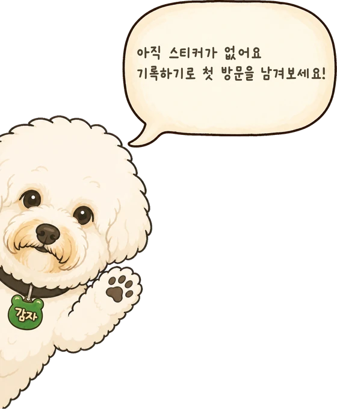
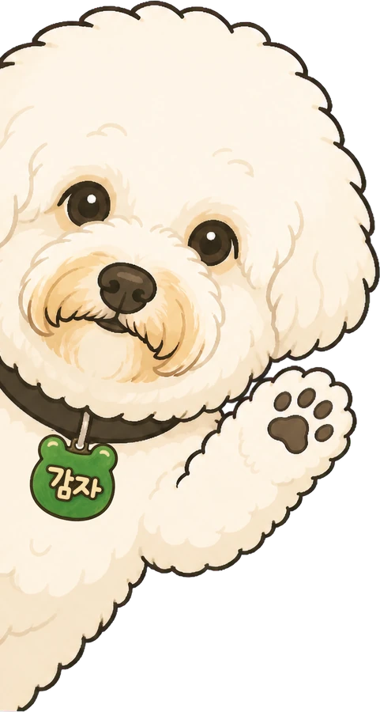

전체
서울
경기
부산
대구
제주
다녀온 하이디라오 매장
0
곳
기록하기
스티커 붙이는 곳


아직 스티커가 없어요
기록하기로 첫 방문을 남겨보세요
접기 ▾
판
바깥 빼꼼
안쪽 말풍선
크기
세로
아래 맞춤
가운데
가로
A 상자가 가운데
B 둘이 가운데
그림
A 처음 것
B 말풍선 작게
상자
폭
세로
아래
가운데
위
아래 문구
숨김
보임
감자
보임
숨김 (지금 화면)